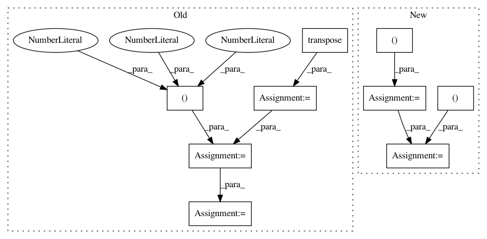

327ffc711693f1d0fe9ef6c40f086a33a9231019,chainer_chemistry/models/gat.py,GraphAttentionNetworks,update,#GraphAttentionNetworks#Any#Any#Any#,71
Before Change
self.heads, self.hidden_dim))
device_id = cuda.get_device_from_array(h_i.array).id
h_j = functions.copy(h_i, device_id)
h_j = functions.transpose(h_j, (0, 2, 1, 3, 4))
// (minibatch, atom, atom, heads, out_dim * 2)
e = functions.concat([h_i, h_j], axis=4)
// (minibatch, heads, atom, atom, out_dim * 2)
e = functions.transpose(e, (0, 3, 1, 2, 4))
// (minibatch * heads, atom * atom, out_dim * 2)
e = functions.reshape(e, (mb * self.heads, atom * atom,
self.hidden_dim * 2))
// (minibatch * heads, atom * atom, 1)
e = self.attenstion_layers[step](e)
// (minibatch, heads, atom, atom)
e = functions.reshape(e, (mb, self.heads, atom, atom))
// (heads, minibatch, atom, atom)
e = functions.transpose(e, (1, 0, 2, 3))
e = functions.leaky_relu(e)
// z = functions.reshape(z, (self.heads, mb, atom, atom))
cond = adj.array.astype(xp.bool)
cond = xp.broadcast_to(cond, e.array.shape)
// TODO(mottodora): find better way to ignore non connected
e = functions.where(cond, e,
xp.broadcast_to(xp.array(-10000), e.array.shape)
.astype(xp.float32))
// (heads, minibatch, atom, atom)
alpha = functions.softmax(e)
// (minibatch, heads, atom, atom)
alpha = functions.transpose(alpha, (1, 0, 2, 3))
// (minibatch, heads, atom, out_dim)
h = functions.transpose(h, (0, 2, 1, 3))
// (minibatch, heads, atom, out_dim)
h_new = functions.matmul(alpha, h)
After Change
self.heads, self.hidden_dim))
// (minibatch, atom, 1, heads, out_dim)
h_j = functions.reshape(h, (mb, atom, 1, self.heads, self.hidden_dim))
// (minibatch, atom, atom, heads, out_dim)
h_j = functions.broadcast_to(h_j, (mb, atom, atom,
self.heads, self.hidden_dim))
// (minibatch, atom, atom, heads, out_dim * 2)
e = functions.concat([h_i, h_j], axis=4)
In pattern: SUPERPATTERN
Frequency: 3
Non-data size: 9
Instances
Project Name: pfnet-research/chainer-chemistry
Commit Name: 327ffc711693f1d0fe9ef6c40f086a33a9231019
Time: 2018-08-19
Author: mottodora@gmail.com
File Name: chainer_chemistry/models/gat.py
Class Name: GraphAttentionNetworks
Method Name: update
Project Name: interactiveaudiolab/nussl
Commit Name: b82419f321b3b52841065e00d1f50945d7e8a2ee
Time: 2020-03-16
Author: prem@u.northwestern.edu
File Name: nussl/separation/primitive/hpss.py
Class Name: HPSS
Method Name: run
Project Name: dmlc/gluon-cv
Commit Name: 47c6377324b4906ed5e133011350c22d1f809466
Time: 2020-05-01
Author: cheungchih@gmail.com
File Name: scripts/gan/srgan/train_srgan.py
Class Name: SubpixelBlock
Method Name: hybrid_forward